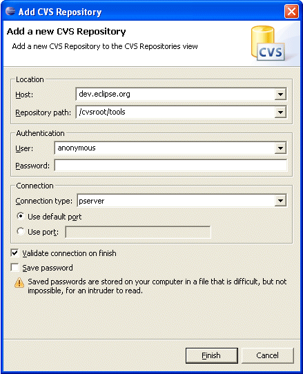

| General |
 top top |
- What is VE
The Visual Editor is
an open source editor. The provided components allow for visually editing java classes, in particular visual classes. The java component is integrated with the Eclipse java editor so that changes in either are reflected between them immediately.
- How do I make a suggestion for this FAQ?
The best way to contribute to this FAQ is to post your suggestion to the
VE newsgroup with the
subject prefixed by "[FAQ]". You may post just a question or both a question and
answer.
- Which operating systems does VE support?
VE is written in pure Java and should run on all operating systems officially
supported by the Eclipse platform. It's been tested on Windows and Linux (GTK and
Motif).
Note: At this time MAC OSX is not supported.
- How is VE licensed?
VE is licensed in accordance with the
Eclipse Public License.
Third party components built using VE are made available under their own licenses.
|
| Download and Install |
top |
- How do I Install VE?
VE can now be downloaded through Update Manager. Select
"Find and Install..." then select "Search for new
features to install..." From there expand Eclipse.org update
site, and select EMF, GEF, and Visual Editor updates categories. Then
select the Visual Editor (or Visual Editor SDK if you want to do
development for the Visual Editor, or see its source). It will tell
then tell you what compatible levels of EMF and GEF are required.
Select those too, and then finish the install.
Or you can
download
the version of VE that matches your installation of Eclipse.
(The SDK download contains documentation and source, while the
runtime download does not.) You will also need to download the
matching version of GEF and EMF. The download page will give this
information for you. Exit Eclipse and unzip into the directory that eclipse
is installed into. For example, if you have installed into "D:\XYZ\eclipse",
you would unzip into "D:\XYZ". Restart Eclipse using the -clean option (only do
this once) to clear the cache and verify that everything is
installed. To do so, go to Help->About Eclipse
Platform->Feature Details. Check the following entries:
| Provider |
Feature id
|
| Eclipse.org |
org.eclipse.jem |
| Eclipse.org |
org.eclipse.jem.source (SDK only) |
| Eclipse.org |
org.eclipse.ve |
| Eclipse.org |
org.eclipse.ve.source
(SDK only) |
| Eclipse.org |
org.eclipse.ve.sdk (SDK only) |
- Where do I find the documentation?
The documentation is available in the SDK download. After unzipping this build into your
Eclipse installation directory, start Eclipse (and possibly restart after updating
via the update manager), click on the Help menu and then Help Contents.
|
|
- How do I checkout VE via CVS?
| Open the CVS Repositories View using the Window menu.
Right-click on the view and select "New" --> "Repository
Location..." Enter the data shown here. |
 |
Expand the HEAD node and select the desired module.
ve-dev-base: This is just the base projects. You would use this for developing VE code, or developing against VE code. Most developers would use this.
ve-dev-others: This brings in the examples and junit tests projects. You would need to check out ve-dev-base first.
ve-all: This is everything. You would check this out if you need everything, this would be for doing builds and such. It includes the features and build projects. Most people won't need this.
Then use the context menu and select "Checkout Module" |
|
|
| Developer |
top |
- How do I ask questions?
Questions about the use of VE in user projects that are not addressed in this
FAQ should be posted to the
VE newsgroup. Questions
and comments
regarding the implementation of VE itself should be posted
to the VE mailing
list.
- How do I report a bug or request a feature?
VE, like the Eclipse project, uses
Bugzilla as its bug and feature tracking
system. Entering a bug\feature report is as simple as filling in a web form on
the eclipse bugzilla page. The first
time you enter a bug you will need to
create a new bugzilla
account for yourself by providing an email address and choosing a password.
Before submitting a bug, please be sure to check the list of
open VE bugs and
recentely closed VE bugs.
- How do I develop on top of VE (i.e. extend the VE)?
Install the SDK download into your target Eclipse. Now do the following from your development workspace (for Eclipse 2.1.2):
- Do Window->Preferences->Plugin Development->Target Platform
- Select the radio button for "another compatible application ..." and browse and select the eclipse directory of your target Eclipse.
- Hit the "Reload" button, and then "OK".
- Now go to File->Import...->External Plugins and Fragments
- Make sure that "Copy plugin contents..." is not checked. Then hit Next.
- From here select all of the org.eclipse.jem.* and org.eclipse.ve.* plugins.
- Hit the "Add required plugins" button too.
- Hit "Finish." This will proceed to load all of the binary plugins into your workspace.
- Then go back to Window->Preferences->Plugin Development->Target Platform and hit "Deselect all" and then hit "Not in workspace", then hit "OK." This will fix it up so that no duplicate plugin warnings happen on execution.
- Why do I get main class not found when starting a VE editor?
If you get this message, look in the .log file. If you see a message that says NoClassDefFoundError for IVMServer, then you tried to use the source from the SDK and loaded it into your development workspace instead of the binaries. You cannot use the "Extract source archives..." checkbox on the import external plugins and fragments wizard. This is because the source is to be used for developers extending the VE, not developing the VE itself. There are jars that are created for the remote vm, and they aren't created when you use the source from the SDK
If you want to extend the VE, then see the How
do I develop on top of VE (i.e. extend the VE)?
If you want to develop the VE itself, you will need to load the projects from CVS. See How do I checkout VE via CVS?
.
|